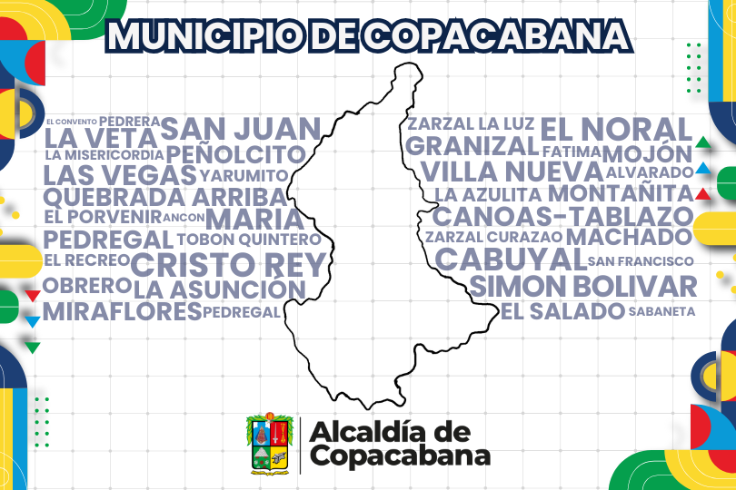

Departamento Administrativo de Planeación
Agenda
Ver más

Impacto en el Territorio
Ver más
Planes Estratégicos
Ver más
Consulta de Radicado
Número de Radicado:
Consultando...
Consultando radicado...